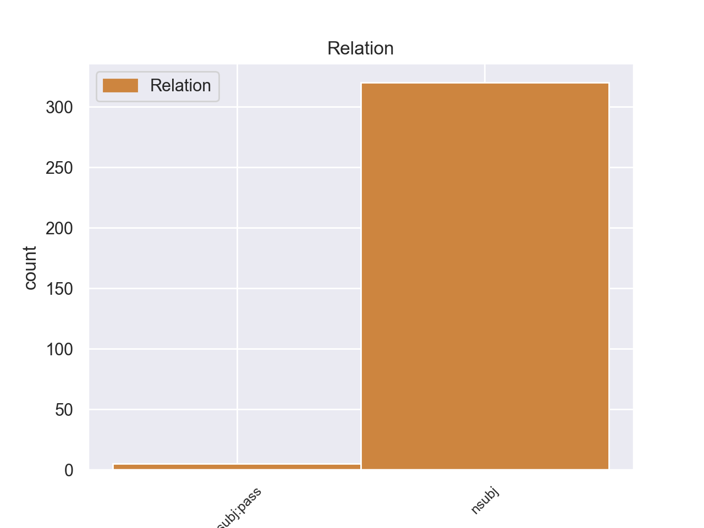
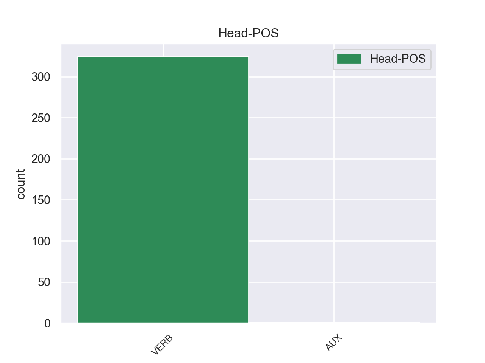
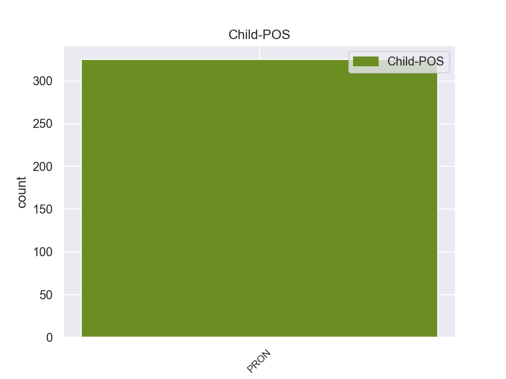

Distribution of features within this leaf



Agreement Rules sorted by frequency.
- When the dependent token is the nominal subject(nsubj) of the head token,
1 πρόκειται _ _ _ _ 0 _ _ _
2 για _ _ _ _ 0 _ _ _
3 αυτό _ _ _ _ 0 _ _ _
4 το _ _ _ _ 0 _ _ _
5 οποίο _ _ _ _ 0 _ _ _
6 αποκαλύφθηκε _ _ _ _ 0 _ _ _
7 κατά _ _ _ _ 0 _ _ _
8 τη _ _ _ _ 0 _ _ _
9 διάρκεια _ _ _ _ 0 _ _ _
10 αυτής _ _ _ _ 0 _ _ _
11 της _ _ _ _ 0 _ _ _
12 διαδικασίας _ _ _ _ 0 _ _ _
13 , _ _ _ _ 0 _ _ _
14 ότι _ _ _ _ 0 _ _ _
15 ο _ _ _ _ 0 _ _ _
16 Εισαγγελέας _ _ _ _ 0 _ _ _
17 κάποια _ _ _ _ 0 _ _ _
18 στιγμή _ _ _ _ 0 _ _ _
19 ζήτησε _ _ _ _ 0 _ _ _
20 από _ _ _ _ 0 _ _ _
21 την _ _ _ _ 0 _ _ _
22 Πρόεδρο _ _ _ _ 0 _ _ _
23 του _ _ _ _ 0 _ _ _
24 Σώματος _ _ _ _ 0 _ _ _
25 , _ _ _ _ 0 _ _ _
26 την _ _ _ _ 0 _ _ _
27 προκάτοχό _ _ _ _ 0 _ _ _
28 σας _ _ _ _ 0 _ _ _
29 , _ _ _ _ 0 _ _ _
30 λεπτομέρειες _ _ _ _ 0 _ _ _
31 για _ _ _ _ 0 _ _ _
32 την _ _ _ _ 0 _ _ _
33 ψήφο _ _ _ _ 0 _ _ _
34 που που PRON _ Case=Nom|Gender=Neut|Number=Plur|Person=3|PronType=Rel 36 nsubj _ _
35 έχουν _ _ _ _ 0 _ _ _
36 δώσει δώσω VERB _ Aspect=Imp|Mood=Ind|Number=Plur|Person=3|Tense=Pres|VerbForm=Fin|Voice=Act 0 _ _ _
37 οι _ _ _ _ 0 _ _ _
38 δύο _ _ _ _ 0 _ _ _
39 συγκεκριμένοι _ _ _ _ 0 _ _ _
40 βουλευτές _ _ _ _ 0 _ _ _
41 προκειμένου _ _ _ _ 0 _ _ _
42 να _ _ _ _ 0 _ _ _
43 διευκρινιστεί _ _ _ _ 0 _ _ _
44 περαιτέρω _ _ _ _ 0 _ _ _
45 η _ _ _ _ 0 _ _ _
46 πιθανότητα _ _ _ _ 0 _ _ _
47 να _ _ _ _ 0 _ _ _
48 είχαν _ _ _ _ 0 _ _ _
49 ασκήσει _ _ _ _ 0 _ _ _
50 αθέμιτη _ _ _ _ 0 _ _ _
51 επιρροή _ _ _ _ 0 _ _ _
52 . _ _ _ _ 0 _ _ _
1 Εν _ _ _ _ 0 _ _ _
2 τω _ _ _ _ 0 _ _ _
3 μεταξύ _ _ _ _ 0 _ _ _
4 είχε _ _ _ _ 0 _ _ _
5 ήδη _ _ _ _ 0 _ _ _
6 χρεωθεί _ _ _ _ 0 _ _ _
7 την _ _ _ _ 0 _ _ _
8 οδυνηρή _ _ _ _ 0 _ _ _
9 περιπέτεια _ _ _ _ 0 _ _ _
10 της _ _ _ _ 0 _ _ _
11 Μικρασιατικής _ _ _ _ 0 _ _ _
12 καταστροφής _ _ _ _ 0 _ _ _
13 που _ _ _ _ 0 _ _ _
14 εξυπηρετούσε _ _ _ _ 0 _ _ _
15 τα _ _ _ _ 0 _ _ _
16 σχέδια _ _ _ _ 0 _ _ _
17 των _ _ _ _ 0 _ _ _
18 Μεγάλων _ _ _ _ 0 _ _ _
19 Δυνάμεων _ _ _ _ 0 _ _ _
20 σ _ _ _ _ 0 _ _ _
21 την _ _ _ _ 0 _ _ _
22 περιοχή _ _ _ _ 0 _ _ _
23 και _ _ _ _ 0 _ _ _
24 βασίστηκε _ _ _ _ 0 _ _ _
25 σε _ _ _ _ 0 _ _ _
26 αβάσιμους _ _ _ _ 0 _ _ _
27 σχεδιασμούς _ _ _ _ 0 _ _ _
28 όπως _ _ _ _ 0 _ _ _
29 αυτοί αυτός PRON PRON Case=Nom|Gender=Masc|Number=Plur|Person=3|PronType=Dem 30 nsubj:pass _ _
30 συνοψίζονταν συνοψίζω VERB VERB Aspect=Imp|Mood=Ind|Number=Plur|Person=3|Tense=Past|VerbForm=Fin|Voice=Pass 0 _ _ _
31 σ _ _ _ _ 0 _ _ _
32 το _ _ _ _ 0 _ _ _
33 δόγμα _ _ _ _ 0 _ _ _
34 " _ _ _ _ 0 _ _ _
35 Η _ _ _ _ 0 _ _ _
36 Ελλάς _ _ _ _ 0 _ _ _
37 των _ _ _ _ 0 _ _ _
38 δύο _ _ _ _ 0 _ _ _
39 ηπείρων _ _ _ _ 0 _ _ _
40 και _ _ _ _ 0 _ _ _
41 των _ _ _ _ 0 _ _ _
42 πέντε _ _ _ _ 0 _ _ _
43 θαλασσών _ _ _ _ 0 _ _ _
44 " _ _ _ _ 0 _ _ _
45 . _ _ _ _ 0 _ _ _
Disagree Examples:
1 Και _ _ _ _ 0 _ _ _
2 θα _ _ _ _ 0 _ _ _
3 το _ _ _ _ 0 _ _ _
4 κάνουμε _ _ _ _ 0 _ _ _
5 για _ _ _ _ 0 _ _ _
6 τους _ _ _ _ 0 _ _ _
7 λόγους _ _ _ _ 0 _ _ _
8 που που PRON _ Case=Nom|Gender=Neut|Number=Plur|Person=3|PronType=Rel 9 nsubj _ _
9 εξηγήσαμε εξηγήσαμε VERB _ Aspect=Imp|Mood=Ind|Number=Plur|Person=1|Tense=Pres|VerbForm=Fin|Voice=Act 0 _ _ _
10 , _ _ _ _ 0 _ _ _
11 αλλά _ _ _ _ 0 _ _ _
12 θέλω _ _ _ _ 0 _ _ _
13 , _ _ _ _ 0 _ _ _
14 κυρίες _ _ _ _ 0 _ _ _
15 και _ _ _ _ 0 _ _ _
16 κύριοι _ _ _ _ 0 _ _ _
17 , _ _ _ _ 0 _ _ _
18 να _ _ _ _ 0 _ _ _
19 σας _ _ _ _ 0 _ _ _
20 πω _ _ _ _ 0 _ _ _
21 εδώ _ _ _ _ 0 _ _ _
22 για _ _ _ _ 0 _ _ _
23 ποιο _ _ _ _ 0 _ _ _
24 λόγο _ _ _ _ 0 _ _ _
25 πρόκειται _ _ _ _ 0 _ _ _
26 να _ _ _ _ 0 _ _ _
27 καταψηφίσουμε _ _ _ _ 0 _ _ _
28 τις _ _ _ _ 0 _ _ _
29 τροπολογίες _ _ _ _ 0 _ _ _
30 που _ _ _ _ 0 _ _ _
31 παρουσιάστηκαν _ _ _ _ 0 _ _ _
32 . _ _ _ _ 0 _ _ _
1 Κύριε _ _ _ _ 0 _ _ _
2 Πρόεδρε _ _ _ _ 0 _ _ _
3 , _ _ _ _ 0 _ _ _
4 κατά _ _ _ _ 0 _ _ _
5 τη _ _ _ _ 0 _ _ _
6 διάρκεια _ _ _ _ 0 _ _ _
7 των _ _ _ _ 0 _ _ _
8 τελευταίων _ _ _ _ 0 _ _ _
9 εβδομάδων _ _ _ _ 0 _ _ _
10 επεξεργασθήκαμε _ _ _ _ 0 _ _ _
11 ορισμένα _ _ _ _ 0 _ _ _
12 ζητήματα _ _ _ _ 0 _ _ _
13 , _ _ _ _ 0 _ _ _
14 τα _ _ _ _ 0 _ _ _
15 οποία _ _ _ _ 0 _ _ _
16 σχετίζονται _ _ _ _ 0 _ _ _
17 άμεσα _ _ _ _ 0 _ _ _
18 με _ _ _ _ 0 _ _ _
19 τον _ _ _ _ 0 _ _ _
20 κλάδο _ _ _ _ 0 _ _ _
21 των _ _ _ _ 0 _ _ _
22 μεταφορών _ _ _ _ 0 _ _ _
23 - _ _ _ _ 0 _ _ _
24 ακόμα _ _ _ _ 0 _ _ _
25 και _ _ _ _ 0 _ _ _
26 τα _ _ _ _ 0 _ _ _
27 κοινωνικά _ _ _ _ 0 _ _ _
28 μέτρα _ _ _ _ 0 _ _ _
29 - _ _ _ _ 0 _ _ _
30 ενώ _ _ _ _ 0 _ _ _
31 και _ _ _ _ 0 _ _ _
32 σ _ _ _ _ 0 _ _ _
33 την _ _ _ _ 0 _ _ _
34 Επιτροπή _ _ _ _ 0 _ _ _
35 Περιφερειακής _ _ _ _ 0 _ _ _
36 Πολιτικής _ _ _ _ 0 _ _ _
37 , _ _ _ _ 0 _ _ _
38 Μεταφορών _ _ _ _ 0 _ _ _
39 και _ _ _ _ 0 _ _ _
40 Τουρισμού _ _ _ _ 0 _ _ _
41 εκφράσαμε _ _ _ _ 0 _ _ _
42 την _ _ _ _ 0 _ _ _
43 άποψη _ _ _ _ 0 _ _ _
44 ότι _ _ _ _ 0 _ _ _
45 όλα _ _ _ _ 0 _ _ _
46 αυτά _ _ _ _ 0 _ _ _
47 τα _ _ _ _ 0 _ _ _
48 μέτρα _ _ _ _ 0 _ _ _
49 - _ _ _ _ 0 _ _ _
50 πιστεύω _ _ _ _ 0 _ _ _
51 μάλιστα _ _ _ _ 0 _ _ _
52 ότι _ _ _ _ 0 _ _ _
53 ο _ _ _ _ 0 _ _ _
54 χρόνος _ _ _ _ 0 _ _ _
55 εργασίας _ _ _ _ 0 _ _ _
56 ο _ _ _ _ 0 _ _ _
57 οποίος _ _ _ _ 0 _ _ _
58 επιτέλους _ _ _ _ 0 _ _ _
59 ρυθμίστηκε _ _ _ _ 0 _ _ _
60 πλέον _ _ _ _ 0 _ _ _
61 είναι _ _ _ _ 0 _ _ _
62 ένα _ _ _ _ 0 _ _ _
63 σημαντικό _ _ _ _ 0 _ _ _
64 κεφάλαιο _ _ _ _ 0 _ _ _
65 , _ _ _ _ 0 _ _ _
66 το _ _ _ _ 0 _ _ _
67 οποίο οποίο PRON _ Case=Acc|Gender=Fem|Number=Sing|Person=3|PronType=Rel 68 nsubj _ _
68 ολοκληρώθηκε ολοκληρώθηκε VERB _ Aspect=Perf|Mood=Ind|Number=Plur|Person=1|VerbForm=Fin|Voice=Act 0 _ _ _
69 - _ _ _ _ 0 _ _ _
70 έχουν _ _ _ _ 0 _ _ _
71 νόημα _ _ _ _ 0 _ _ _
72 μόνο _ _ _ _ 0 _ _ _
73 εάν _ _ _ _ 0 _ _ _
74 υπάρχει _ _ _ _ 0 _ _ _
75 η _ _ _ _ 0 _ _ _
76 ανάλογη _ _ _ _ 0 _ _ _
77 βούληση _ _ _ _ 0 _ _ _
78 από _ _ _ _ 0 _ _ _
79 τα _ _ _ _ 0 _ _ _
80 κράτη _ _ _ _ 0 _ _ _
81 μέλη _ _ _ _ 0 _ _ _
82 , _ _ _ _ 0 _ _ _
83 αφενός _ _ _ _ 0 _ _ _
84 για _ _ _ _ 0 _ _ _
85 την _ _ _ _ 0 _ _ _
86 εντατικοποίηση _ _ _ _ 0 _ _ _
87 των _ _ _ _ 0 _ _ _
88 ελέγχων _ _ _ _ 0 _ _ _
89 και _ _ _ _ 0 _ _ _
90 αφετέρου _ _ _ _ 0 _ _ _
91 για _ _ _ _ 0 _ _ _
92 την _ _ _ _ 0 _ _ _
93 αναπροσαρμογή _ _ _ _ 0 _ _ _
94 των _ _ _ _ 0 _ _ _
95 κυρώσεων _ _ _ _ 0 _ _ _
96 . _ _ _ _ 0 _ _ _
1 Με _ _ _ _ 0 _ _ _
2 αυτό _ _ _ _ 0 _ _ _
3 μας μας PRON _ Case=Gen|Gender=Masc|Number=Plur|Person=1|Poss=Yes|PronType=Prs 4 nsubj _ _
4 δίνεται δίνεται VERB _ Aspect=Imp|Mood=Ind|Number=Sing|Person=3|Tense=Pres|VerbForm=Fin|Voice=Act 0 _ _ _
5 η _ _ _ _ 0 _ _ _
6 ευκαιρία _ _ _ _ 0 _ _ _
7 να _ _ _ _ 0 _ _ _
8 προβούμε _ _ _ _ 0 _ _ _
9 σε _ _ _ _ 0 _ _ _
10 έναν _ _ _ _ 0 _ _ _
11 ενδιάμεσο _ _ _ _ 0 _ _ _
12 απολογισμό _ _ _ _ 0 _ _ _
13 σε _ _ _ _ 0 _ _ _
14 ό,τι _ _ _ _ 0 _ _ _
15 αφορά _ _ _ _ 0 _ _ _
16 τα _ _ _ _ 0 _ _ _
17 ανθρώπινα _ _ _ _ 0 _ _ _
18 δικαιώματα _ _ _ _ 0 _ _ _
19 σ _ _ _ _ 0 _ _ _
20 την _ _ _ _ 0 _ _ _
21 Τουρκία _ _ _ _ 0 _ _ _
22 και _ _ _ _ 0 _ _ _
23 τη _ _ _ _ 0 _ _ _
24 σημειωθείσα _ _ _ _ 0 _ _ _
25 πρόοδο _ _ _ _ 0 _ _ _
26 σ _ _ _ _ 0 _ _ _
27 τον _ _ _ _ 0 _ _ _
28 τομέα _ _ _ _ 0 _ _ _
29 των _ _ _ _ 0 _ _ _
30 πολιτικών _ _ _ _ 0 _ _ _
31 μεταρρυθμίσεων _ _ _ _ 0 _ _ _
32 . _ _ _ _ 0 _ _ _
1 Σ _ _ _ _ 0 _ _ _
2 τις _ _ _ _ 0 _ _ _
3 συνομιλίες _ _ _ _ 0 _ _ _
4 που που PRON _ Case=Nom|Gender=Neut|Number=Plur|Person=3|PronType=Rel 5 nsubj _ _
5 είχα είχα VERB _ Aspect=Imp|Mood=Ind|Number=Plur|Person=1|Tense=Pres|VerbForm=Fin|Voice=Act 0 _ _ _
6 σ _ _ _ _ 0 _ _ _
7 την _ _ _ _ 0 _ _ _
8 Αγκυρα _ _ _ _ 0 _ _ _
9 την _ _ _ _ 0 _ _ _
10 περασμένη _ _ _ _ 0 _ _ _
11 εβδομάδα _ _ _ _ 0 _ _ _
12 ενεθάρρυνα _ _ _ _ 0 _ _ _
13 με _ _ _ _ 0 _ _ _
14 έμφαση _ _ _ _ 0 _ _ _
15 την _ _ _ _ 0 _ _ _
16 τουρκική _ _ _ _ 0 _ _ _
17 κυβέρνηση _ _ _ _ 0 _ _ _
18 να _ _ _ _ 0 _ _ _
19 συνεχίσει _ _ _ _ 0 _ _ _
20 με _ _ _ _ 0 _ _ _
21 αποφασιστικότητα _ _ _ _ 0 _ _ _
22 την _ _ _ _ 0 _ _ _
23 πορεία _ _ _ _ 0 _ _ _
24 των _ _ _ _ 0 _ _ _
25 πολιτικών _ _ _ _ 0 _ _ _
26 και _ _ _ _ 0 _ _ _
27 οικονομικών _ _ _ _ 0 _ _ _
28 μεταρρυθμίσεών _ _ _ _ 0 _ _ _
29 της _ _ _ _ 0 _ _ _
30 . _ _ _ _ 0 _ _ _
1 Σε _ _ _ _ 0 _ _ _
2 αντιδιαστολή _ _ _ _ 0 _ _ _
3 προς _ _ _ _ 0 _ _ _
4 τα _ _ _ _ 0 _ _ _
5 θετικά _ _ _ _ 0 _ _ _
6 βήματα _ _ _ _ 0 _ _ _
7 που που PRON _ Case=Nom|Gender=Neut|Number=Plur|Person=3|PronType=Rel 8 nsubj _ _
8 γίνονται γίνονται VERB _ Aspect=Imp|Mood=Ind|Number=Plur|Person=1|Tense=Pres|VerbForm=Fin|Voice=Act 0 _ _ _
9 , _ _ _ _ 0 _ _ _
10 εξακολουθούμε _ _ _ _ 0 _ _ _
11 να _ _ _ _ 0 _ _ _
12 διαπιστώνουμε _ _ _ _ 0 _ _ _
13 ελλείμματα _ _ _ _ 0 _ _ _
14 . _ _ _ _ 0 _ _ _